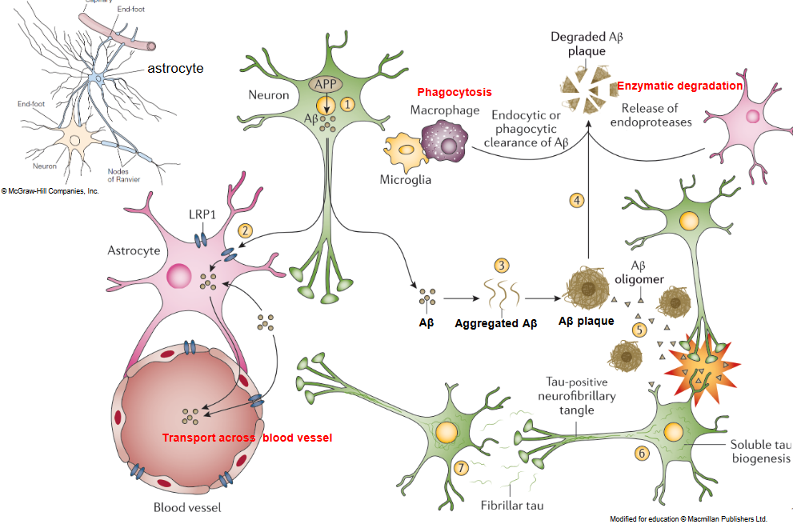

9 Alzheimer’s Disease
Alzheimer’s disease (AD) is a prevalent neurodegenerative disorder characterized by progressive cognitive decline and memory loss. Here are some key points about the prevalence, duration, and onset of Alzheimer’s disease:
Prevalence: Alzheimer’s disease is estimated to affect 10-30% of individuals aged 65 and older, making it a common condition among older adults. The prevalence increases with age, and it is one of the leading causes of dementia worldwide.
Clinical Duration: Alzheimer’s disease is a chronic illness with an average clinical duration of 8-10 years. However, the progression and severity of symptoms can vary widely among individuals.
Late-Onset vs. Early-Onset: The majority of Alzheimer’s cases (>95%) belong to the late-onset form, which typically occurs in individuals aged 65 and older. However, approximately 5% of cases are classified as early-onset Alzheimer’s disease, affecting individuals younger than 65. The exact cause of most early-onset cases is unknown, although they are primarily sporadic, meaning they occur without a clear familial inheritance pattern.
Genetic Mutations: A small proportion of individuals (<1%) have inherited genetic mutations that significantly increase their risk of developing Alzheimer’s disease at a much younger age, typically around 45 years old. These cases, known as familial or early-onset familial Alzheimer’s disease (EOFAD), are characterized by a strong familial inheritance pattern and are caused by mutations in specific genes such as the amyloid precursor protein (APP), presenilin 1 (PSEN1), and presenilin 2 (PSEN2).
In AD, hippocampal and cortical atrophy are prominent structural changes that occur in the brain and are associated with cognitive decline and memory loss. Here’s how these changes manifest:
Hippocampal Atrophy: The hippocampus is a region of the brain involved in the formation and consolidation of new memories. In Alzheimer’s disease, the hippocampus is one of the earliest and most severely affected brain regions. Hippocampal atrophy refers to the shrinkage or loss of neurons and tissue in the hippocampus.
Cortical Atrophy: Cortical atrophy refers to the loss of neurons and tissue in the cerebral cortex, the outer layer of the brain responsible for higher cognitive functions such as reasoning, language, and perception. In Alzheimer’s disease, cortical atrophy typically affects multiple regions of the cortex, including the temporal, parietal, and frontal lobes.
Neuroimaging Findings: Neuroimaging techniques such as magnetic resonance imaging (MRI) and positron emission tomography (PET) can visualize and quantify hippocampal and cortical atrophy in individuals with Alzheimer’s disease. These imaging modalities allow clinicians to assess the extent of brain atrophy, track disease progression, and monitor treatment response over time.
9.1 Structure of the Brain
The structure of the human brain is complex and highly organized, consisting of various regions and interconnected networks that govern cognitive, emotional, sensory, and motor functions. Here’s an overview of the key structures and their functions:
- Cerebrum:
- The largest and most prominent part of the brain.
- Divided into two hemispheres (left and right) and further subdivided into four lobes: frontal, parietal, temporal, and occipital.
- Responsible for higher cognitive functions such as reasoning, problem-solving, language, and voluntary movement.
- Contains the cerebral cortex, the outer layer of gray matter where most information processing occurs.
- Cerebellum:
- Located below the cerebrum at the back of the brain.
- Plays a crucial role in coordinating voluntary movements, maintaining balance, and posture.
- Involved in motor learning and skill acquisition.
- Brainstem:
- Connects the brain to the spinal cord and serves as a relay center for sensory and motor pathways.
- Comprises the midbrain, pons, and medulla oblongata.
- Regulates essential functions such as heart rate, breathing, sleep-wake cycles, and basic arousal.
- Thalamus:
- Located deep within the brain, above the brainstem.
- Acts as a relay station for sensory information, transmitting signals from sensory organs to the cerebral cortex.
- Plays a role in regulating consciousness, attention, and sleep.
- Hypothalamus:
- Lies below the thalamus and above the pituitary gland.
- Regulates various physiological processes such as body temperature, hunger, thirst, and circadian rhythms.
- Controls the release of hormones from the pituitary gland.
- Hippocampus:
- Located within the temporal lobes, deep within the cerebrum.
- Plays a crucial role in memory formation and spatial navigation.
- Particularly involved in the consolidation of short-term memories into long-term memories.
- Amygdala:
- Situated in the temporal lobes, adjacent to the hippocampus.
- Involved in the processing of emotions, particularly fear and aggression.
- Plays a role in emotional memory and social behavior.
- Basal Ganglia:
- Collection of nuclei located deep within the cerebral hemispheres.
- Involved in motor control, voluntary movement, and procedural learning.
- Dysfunction of the basal ganglia can lead to movement disorders such as Parkinson’s disease and Huntington’s disease.
9.1.1 Hallmarks of AD
AD is characterized by several hallmark features that contribute to its progressive neurodegenerative nature. These hallmarks include:
- Amyloid Beta (Aβ) Plaques:
- Accumulation of extracellular deposits of amyloid beta protein.
- Aβ peptides are derived from the cleavage of amyloid precursor protein (APP).
- Aggregation of Aβ peptides forms insoluble plaques, which are a hallmark pathological feature of AD.
- Disruption of synaptic function and neuronal toxicity are associated with Aβ plaques.
- Neurofibrillary Tangles (NFTs):
- Intracellular aggregates of hyperphosphorylated tau protein.
- Tau protein normally stabilizes microtubules within neurons.
- Hyperphosphorylation of tau leads to its misfolding and aggregation into insoluble filaments.
- NFTs disrupt neuronal structure and function, leading to cell death and neurodegeneration.
- Neuronal Loss and Atrophy:
- Progressive loss of neurons, particularly in brain regions associated with memory and cognitive function, such as the hippocampus and cortex.
- Atrophy (shrinkage) of affected brain regions due to neuronal loss and synaptic dysfunction.
- Neuronal loss contributes to cognitive decline and dementia in AD patients.
- Inflammation and Neuroinflammation:
- Activation of immune cells, including microglia and astrocytes, in response to Aβ plaques and NFTs.
- Release of pro-inflammatory cytokines and chemokines, leading to chronic neuroinflammation.
- Neuroinflammation exacerbates neuronal damage and contributes to disease progression.
- Synaptic Dysfunction:
- Impairment of synaptic transmission and plasticity.
- Disruption of neurotransmitter systems, including acetylcholine, glutamate, and gamma-aminobutyric acid (GABA).
- Loss of synapses precedes neuronal loss and correlates with cognitive decline in AD.
- Vascular Changes:
- Accumulation of vascular amyloid deposits in cerebral blood vessels (cerebral amyloid angiopathy).
- Vascular dysfunction, including impaired cerebral blood flow and blood-brain barrier integrity.
- Vascular pathology contributes to cognitive impairment and increases the risk of hemorrhagic stroke in AD patients.
9.1.2 Amyloid Cascade Hypothesis
The amyloid cascade hypothesis proposes that the accumulation of amyloid beta (Aβ) protein is the primary trigger for the development of Alzheimer’s disease pathology. According to this hypothesis, the deposition of Aβ in the brain leads to a cascade of events that ultimately result in neurofibrillary tangles, neuronal cell loss, vascular damage, and dementia characteristic of Alzheimer’s disease.
Key points of the amyloid cascade hypothesis include:
Aβ Deposition: The hypothesis posits that the initial step in Alzheimer’s disease pathogenesis is the abnormal accumulation of Aβ peptides, which aggregate to form insoluble plaques in the brain.
Neurofibrillary Tangles: The presence of Aβ plaques is believed to trigger the hyperphosphorylation and aggregation of tau protein, leading to the formation of neurofibrillary tangles within neurons. These tangles disrupt neuronal structure and function, contributing to neurodegeneration.
Neuronal Cell Loss: As the disease progresses, widespread neuronal cell loss occurs, particularly in brain regions crucial for memory and cognitive function, such as the hippocampus and cortex. This neuronal loss correlates with the severity of cognitive impairment in Alzheimer’s patients.
Vascular Damage: Aβ deposition is also associated with vascular changes, including the accumulation of amyloid in cerebral blood vessels (cerebral amyloid angiopathy) and impaired cerebral blood flow. Vascular dysfunction contributes to cognitive decline and increases the risk of stroke in Alzheimer’s disease.
Dementia: Ultimately, the cumulative effects of Aβ deposition, neurofibrillary tangles, neuronal loss, and vascular damage lead to the clinical manifestation of dementia, characterized by progressive cognitive decline, memory loss, and impaired daily functioning.
9.1.3 Amyloid Precursor Protein (i.e., APP)
Amyloid precursor protein (APP) is a transmembrane protein that is abundantly produced in neurons, although its precise function in the brain is not fully understood. Interestingly, studies in mice lacking APP have shown minimal observable effects, suggesting that APP may not be essential for basic neuronal function.
However, APP is known to undergo proteolytic processing through multiple alternative pathways, some of which result in the generation of amyloid beta (Aβ) peptides, while others do not. Aβ peptides are central to the amyloid cascade hypothesis of Alzheimer’s disease, as their accumulation is believed to contribute to the pathogenesis of the disease.
The metabolism of APP involves several proteolytic enzymes, including α-secretase, β-secretase, and γ-secretase. Cleavage of APP by α-secretase within the Aβ region results in the generation of soluble APP fragments that have neuroprotective properties. However, cleavage by β-secretase followed by γ-secretase leads to the production of Aβ peptides, particularly Aβ42, which are prone to aggregation and form insoluble plaques in the brain, a hallmark of Alzheimer’s disease.
While the exact physiological function of APP remains elusive, its involvement in Aβ production and the pathogenesis of Alzheimer’s disease has garnered significant attention in research aimed at understanding and treating the disease. Further investigation into the molecular pathways and regulatory mechanisms governing APP metabolism may provide insights into its role in normal brain function and neurodegenerative disorders.
9.1.3.1 Transmembrane Protein Biosynthesis
Transmembrane protein biogenesis refers to the process by which transmembrane proteins, which span the lipid bilayer of cellular membranes, are synthesized, folded, and inserted into their appropriate cellular membranes. This process is essential for the proper functioning of cells, as transmembrane proteins play crucial roles in various cellular processes, including cell signaling, transport of molecules across membranes, and cell-cell communication.
The biogenesis of transmembrane proteins involves several steps:
Protein Synthesis: Transmembrane proteins are synthesized on ribosomes in the cytosol as precursor proteins. These precursor proteins typically contain an N-terminal signal sequence that directs them to the endoplasmic reticulum (ER), where transmembrane protein biogenesis primarily occurs.
Targeting to the Endoplasmic Reticulum (ER): The N-terminal signal sequence of the precursor protein interacts with the signal recognition particle (SRP), which targets the ribosome-nascent chain complex to the ER membrane. The ribosome then docks onto the ER membrane, and protein synthesis continues into the ER lumen.
Translocation into the ER Lumen: As the nascent polypeptide chain is synthesized, it is translocated across the ER membrane through a proteinaceous channel called the translocon. The signal sequence is typically cleaved by signal peptidase as the protein is translocated into the ER lumen.
Protein Folding and Quality Control: Once in the ER lumen, transmembrane proteins undergo folding and assembly into their native three-dimensional structures. Chaperone proteins assist in the folding process, while quality control mechanisms monitor protein folding and ensure that misfolded proteins are targeted for degradation by the ER-associated degradation (ERAD) pathway.
Insertion into the Membrane: Integral transmembrane proteins contain hydrophobic regions (transmembrane domains) that span the lipid bilayer of the ER membrane. These hydrophobic regions facilitate the insertion of the protein into the membrane, where they adopt their final topology.
Post-Translational Modifications: Transmembrane proteins may undergo various post-translational modifications in the ER, including glycosylation, disulfide bond formation, and proteolytic cleavage, which can further modulate their structure and function.
Transport to Destination Organelles: Once synthesized and properly folded in the ER, transmembrane proteins may be transported to their final destination organelles, such as the Golgi apparatus, plasma membrane, or other cellular compartments, via vesicular transport pathways.
9.1.4 Presinilin and \(\gamma\)-secretase
Gamma-secretase is a multisubunit enzyme complex responsible for the cleavage of transmembrane proteins within the lipid bilayer, including amyloid precursor protein (APP) and Notch receptors. The catalytic core of gamma-secretase is composed of presenilin, which exists in two isoforms: presenilin 1 (PSEN1) and presenilin 2 (PSEN2). Both isoforms are integral membrane proteins that contain multiple transmembrane domains and are essential components of the gamma-secretase complex.
Key points about gamma-secretase and its association with presenilin 1 or presenilin 2 include:
Cleavage of Substrates: Gamma-secretase mediates the proteolytic cleavage of a variety of transmembrane proteins, including APP and Notch receptors, which are involved in critical cellular processes such as neuronal signaling and development. The cleavage of these substrates by gamma-secretase generates intracellular signaling fragments and extracellular protein fragments, such as amyloid beta (Aβ) peptides derived from APP.
Presenilin as the Catalytic Component: Presenilin serves as the catalytic subunit of the gamma-secretase complex, responsible for the enzymatic activity that cleaves substrates within their transmembrane domains. Presenilin contains essential aspartate residues within its transmembrane domains, which are involved in the proteolytic cleavage reaction.
Association with Alzheimer’s Disease: Mutations in the genes encoding presenilin 1 (PSEN1) and presenilin 2 (PSEN2) are associated with familial forms of Alzheimer’s disease (FAD), a rare, early-onset form of the disease. These mutations lead to alterations in gamma-secretase activity, resulting in an imbalance in the production of Aβ peptides and an increased accumulation of neurotoxic Aβ42 peptides, which are believed to contribute to the pathogenesis of Alzheimer’s disease.
Therapeutic Target: Due to its central role in the generation of Aβ peptides, gamma-secretase has been considered a promising target for therapeutic intervention in Alzheimer’s disease. However, targeting gamma-secretase poses challenges due to its involvement in the processing of multiple substrates, including Notch receptors, which play critical roles in cellular signaling and development. Selective inhibition of Aβ production while preserving Notch signaling presents a significant hurdle in the development of gamma-secretase inhibitors as Alzheimer’s disease therapies.
9.1.5 Generating A\(\beta\) Peptides
The processing of amyloid precursor protein (APP) by proteolytic enzymes results in the generation of amyloid beta (Aβ) peptides, which play a central role in the pathogenesis of Alzheimer’s disease. Here’s an overview of how APP processing leads to the production of Aβ peptides:
- Synthesis of APP:
- Amyloid precursor protein (APP) is a type I transmembrane protein synthesized in neurons and other cells.
- It is produced in the endoplasmic reticulum (ER) and transported to the Golgi apparatus for further processing and trafficking to the cell surface.
- Proteolytic Processing of APP:
- APP undergoes proteolytic cleavage by two major pathways: the amyloidogenic pathway and the non-amyloidogenic pathway.
- Amyloidogenic Pathway:
- In the amyloidogenic pathway, APP is sequentially cleaved by β-secretase (beta-site amyloid precursor protein cleaving enzyme, BACE1) and γ-secretase.
- β-secretase cleaves APP at the N-terminus of the Aβ domain, releasing a soluble fragment called soluble APPβ (sAPPβ) and a membrane-bound C-terminal fragment (CTFβ or C99).
- CTFβ/C99 fragment is then cleaved by γ-secretase within the transmembrane domain, resulting in the release of Aβ peptides of various lengths, including Aβ40 and Aβ42.
- Aβ42 is particularly prone to aggregation and is implicated in the formation of amyloid plaques in the brain, a hallmark pathological feature of Alzheimer’s disease.
- Non-amyloidogenic Pathway:
- In the non-amyloidogenic pathway, APP is cleaved by α-secretase within the Aβ domain, precluding the generation of Aβ peptides.
- α-secretase cleavage results in the release of a soluble fragment called soluble APPα (sAPPα) and a membrane-bound C-terminal fragment (CTFα or C83).
- CTFα/C83 fragment can be further processed by γ-secretase to produce p3 peptides, which are shorter and less prone to aggregation compared to Aβ peptides.
- Functional Roles of Aβ Peptides:
- The physiological functions of Aβ peptides are not fully understood, but they may play roles in synaptic function, neuronal plasticity, and regulation of neurotransmitter release.
- However, the accumulation and aggregation of Aβ peptides, particularly Aβ42, in the brain are believed to contribute to the neurodegenerative processes underlying Alzheimer’s disease, leading to synaptic dysfunction, neuronal loss, and cognitive decline.
9.2 Neurons
Neurons, the fundamental units of the nervous system, possess a unique structure specialized for the transmission of electrical and chemical signals. Here’s an overview of the structure of a typical neuron and the role of glial cells:
- Neuron Structure:
- Cell Body (Soma): The main part of the neuron containing the nucleus and organelles responsible for cellular metabolism and protein synthesis.
- Dendrites: Branch-like extensions protruding from the cell body that receive incoming signals (neurotransmitters) from other neurons or sensory receptors.
- Axon: A long, slender projection extending from the cell body that transmits electrical impulses (action potentials) away from the cell body toward other neurons, muscles, or glands.
- Axon Terminals (Axon Endings): Specialized structures at the end of the axon that release neurotransmitters to communicate with other neurons or target cells.
- Myelin Sheath: A fatty, insulating layer surrounding the axon formed by glial cells (oligodendrocytes in the central nervous system and Schwann cells in the peripheral nervous system). The myelin sheath enhances the speed and efficiency of electrical signal conduction along the axon.
- Glia (Glial Cells):
- Oligodendrocytes: Glial cells in the central nervous system (CNS) that produce myelin sheaths, which wrap around axons to insulate and support them.
- Astrocytes: Star-shaped glial cells that provide structural support to neurons, regulate the extracellular environment by maintaining ion balance and neurotransmitter levels, and contribute to the blood-brain barrier.
- Microglia: Small, specialized immune cells in the CNS that act as the primary immune defense and perform functions such as phagocytosis (removal of cellular debris and pathogens) and immune response regulation.
9.2.1 APP Trafficking in Neurons
The trafficking of amyloid precursor protein (APP) in neurons involves a complex series of cellular processes that regulate the localization, processing, and function of APP within the cell. Here’s an overview of APP trafficking in neurons:
- Synthesis and Localization:
- APP is synthesized in the endoplasmic reticulum (ER) and transported through the secretory pathway to the Golgi apparatus, where it undergoes post-translational modifications.
- From the Golgi apparatus, APP is transported in vesicles to various cellular compartments, including the plasma membrane and endosomes.
- Plasma Membrane Localization:
- A fraction of newly synthesized APP is transported to the plasma membrane, where it functions in cell adhesion, neurite outgrowth, and synaptic transmission.
- At the plasma membrane, APP may interact with other cell surface receptors and undergo proteolytic processing by secretases, leading to the production of amyloid beta (Aβ) peptides.
- Endocytic Trafficking:
- APP is internalized from the plasma membrane via endocytosis, leading to its trafficking through endosomal compartments.
- Endosomes serve as sorting platforms where APP can be sorted for recycling back to the plasma membrane, targeted for degradation in lysosomes, or transported to other cellular compartments.
- Intracellular Trafficking:
- Within neurons, APP-containing vesicles can undergo retrograde transport along microtubules toward the cell body or anterograde transport toward axonal or dendritic compartments.
- Motor proteins, such as kinesins and dyneins, mediate the movement of APP-containing vesicles along microtubules.
- Axonal Transport:
- APP is transported along axons to reach distal synaptic terminals, where it plays roles in synaptic function and plasticity.
- The axonal trafficking of APP is crucial for the production and release of Aβ peptides at synapses.
- Regulation of Trafficking:
- Various cellular factors and signaling pathways regulate the trafficking of APP in neurons, including protein kinases, phosphatases, and cytoskeletal elements.
- Dysregulation of APP trafficking can lead to aberrant processing and accumulation of Aβ peptides, contributing to the pathogenesis of Alzheimer’s disease.
9.2.2 Structure of A$$42
The fibril structure of amyloid beta 42 (Aβ42) is characterized by its ability to form insoluble aggregates known as amyloid fibrils, which are a hallmark pathological feature of Alzheimer’s disease. Here’s an overview of the fibril structure of Aβ42:
Peptide Sequence: Aβ42 is a peptide consisting of 42 amino acid residues, derived from the proteolytic cleavage of amyloid precursor protein (APP). It is characterized by its hydrophobicity and propensity to aggregate.
Beta-Sheet Conformation: Aβ42 peptides undergo a conformational change from random coil to beta-sheet structure during fibril formation. Beta-sheet structures are characterized by the alignment of peptide strands in a parallel or antiparallel fashion, forming a cross-beta structure.
Cross-Beta Architecture: The assembly of Aβ42 peptides into amyloid fibrils results in the formation of a cross-beta architecture, where individual peptide strands run perpendicular to the long axis of the fibril. This arrangement creates a characteristic pattern of beta-strands stacked along the fibril axis, with intermolecular hydrogen bonding between adjacent peptide strands.
Protofilament Formation: Aβ42 peptides assemble into protofilaments, which are linear aggregates of peptides arranged in a parallel fashion. Protofilaments can further associate laterally to form mature amyloid fibrils, which can vary in length and thickness.
Twisted Ribbon Structure: Mature Aβ42 fibrils often exhibit a twisted ribbon morphology, where individual protofilaments twist around the fibril axis, giving rise to a helical or helical-like structure. This twisted ribbon architecture is a common feature observed in many amyloid fibrils.
Amyloid Core: Within the fibril structure, the amyloid core consists of densely packed regions of beta-sheet structure formed by the aggregation of Aβ42 peptides. These regions are highly stable and resistant to proteolytic degradation.
Structural Polymorphism: Aβ42 fibrils can exhibit structural polymorphism, meaning they can adopt different conformations and morphologies depending on factors such as peptide concentration, solution conditions, and the presence of cofactors or ligands.
9.2.2.1 Amyloid Fibrilation
The amyloid fibrillation process of amyloid beta (Aβ) peptides, particularly Aβ42, involves a series of steps leading to the formation of insoluble aggregates known as amyloid fibrils. Here are the key steps involved in the fibrillation of Aβ peptides:
- Nucleation Phase:
- The fibrillation process begins with the nucleation phase, where monomeric Aβ peptides undergo a conformational change from a soluble, random coil structure to a partially folded intermediate state.
- Several monomeric Aβ peptides associate to form small, stable aggregates known as oligomers or nuclei. These nuclei serve as templates for the further growth of fibrils.
- Nucleation is often considered the rate-limiting step of amyloid fibrillation and can be influenced by factors such as peptide concentration, pH, temperature, and the presence of cofactors.
- Elongation Phase:
- Once nuclei are formed, additional monomeric Aβ peptides bind to the existing aggregates, elongating them and promoting fibril growth.
- The elongation phase involves the addition of Aβ peptides to the ends of existing fibrils, leading to the formation of protofilaments, which are linear aggregates of peptides arranged in a parallel or antiparallel fashion.
- The elongation process proceeds through a mechanism of monomer addition, where soluble Aβ peptides bind to exposed ends of protofilaments, incorporating into the growing fibril structure.
- Maturation Phase:
- As fibrils continue to grow, they undergo structural rearrangements and maturation, leading to the formation of mature amyloid fibrils.
- Mature fibrils are characterized by their stable, cross-beta architecture, with individual peptide strands aligned perpendicular to the long axis of the fibril.
- The maturation phase may involve the lateral association of protofilaments and the twisting of fibrils to form higher-order structures with a twisted ribbon morphology.
- Secondary Nucleation and Fragmentation:
- In addition to elongation, secondary processes such as secondary nucleation and fibril fragmentation can also contribute to the overall kinetics of amyloid fibrillation.
- Secondary nucleation involves the generation of new nuclei from existing fibril surfaces, leading to the formation of new fibrils and the amplification of fibril growth.
- Fibril fragmentation occurs when mature fibrils break apart into smaller fragments, which can serve as seeds for the formation of new fibrils or promote the growth of existing fibrils.
- Fibril Aggregation and Toxicity:
- As amyloid fibrils continue to accumulate, they can aggregate further to form higher-order structures, such as amyloid plaques, which are pathological hallmarks of neurodegenerative diseases like Alzheimer’s disease.
- Oligomeric intermediates formed during the fibrillation process are thought to be particularly toxic to neurons, contributing to neuronal dysfunction and cell death in neurodegenerative disorders.
9.2.2.2 A\(\beta\) Aggregation and Clearance

The clearance and aggregation of amyloid beta (Aβ) peptides are key processes that influence their accumulation and toxicity in the brain, particularly in the context of Alzheimer’s disease. Here’s an overview of Aβ clearance mechanisms and factors contributing to its aggregation:
- Aβ Clearance Mechanisms:
- Enzymatic Degradation: Aβ peptides can be enzymatically degraded by proteases, such as neprilysin, insulin-degrading enzyme (IDE), and matrix metalloproteinases (MMPs), which cleave Aβ into smaller, soluble fragments that can be cleared from the brain.
- Microglial Phagocytosis: Microglial cells, the resident immune cells of the brain, can engulf and clear Aβ peptides through phagocytosis. Microglia express various cell surface receptors, including scavenger receptors, that recognize and internalize Aβ aggregates for degradation within lysosomes.
- Transport Across the Blood-Brain Barrier (BBB): Aβ peptides can be transported across the BBB from the brain to the bloodstream, where they can be cleared by systemic mechanisms, including renal clearance and uptake by the liver.
- Cerebrospinal Fluid (CSF) Clearance: Aβ peptides in the brain interstitial fluid can diffuse into the CSF and be cleared from the central nervous system (CNS) via bulk flow mechanisms, including drainage into the lymphatic system.
- Factors Influencing Aβ Aggregation:
- Aβ Production Rate: The rate of Aβ production, determined by the proteolytic processing of amyloid precursor protein (APP), influences the concentration of soluble Aβ peptides available for aggregation. Increased production or impaired clearance of Aβ can lead to its accumulation and aggregation.
- Aβ Oligomerization: Aβ peptides can form soluble oligomeric intermediates during the early stages of aggregation, which are thought to be particularly toxic to neurons and synapses. Oligomers can further assemble into larger aggregates, including protofibrils and mature amyloid fibrils.
- Seeding and Nucleation: The presence of pre-existing Aβ aggregates, or seeds, can promote the nucleation and aggregation of soluble Aβ peptides by providing templates for fibril growth. Seeding can accelerate the aggregation process and contribute to the propagation of Aβ pathology in the brain.
- Cellular Environment: Factors within the cellular microenvironment, such as pH, metal ions (e.g., copper, zinc), lipid membranes, and chaperone proteins, can influence the conformation and stability of Aβ peptides, affecting their propensity to aggregate.
9.3 Tau Protein
Phosphorylation and aggregation of the Tau protein are central events in the pathogenesis of several neurodegenerative diseases, collectively referred to as tauopathies, including Alzheimer’s disease. Here’s an overview of the relationship between phosphorylation and aggregation of Tau:
- Tau Protein Structure:
- Tau is a microtubule-associated protein (MAP) that plays a crucial role in stabilizing microtubules and facilitating axonal transport in neurons.
- Tau is primarily expressed in neurons and undergoes alternative splicing to generate six isoforms in the adult human brain, ranging from 352 to 441 amino acids in length.
- Tau contains multiple serine and threonine residues that can be phosphorylated by various protein kinases, regulating its physiological function and cellular localization.
- Phosphorylation of Tau:
- Under normal physiological conditions, Tau is subject to dynamic phosphorylation and dephosphorylation events, which regulate its interaction with microtubules and other cellular components.
- Phosphorylation of Tau is tightly regulated by multiple protein kinases, including glycogen synthase kinase 3β (GSK3β), cyclin-dependent kinase 5 (CDK5), and protein kinase A (PKA), among others.
- Phosphorylation of Tau at specific sites can disrupt its binding to microtubules, leading to microtubule destabilization and impairing axonal transport.
- Aberrant hyperphosphorylation of Tau is a hallmark pathological feature of tauopathies, resulting in the accumulation of hyperphosphorylated Tau in the form of intracellular neurofibrillary tangles (NFTs) and neuropil threads.
- Aggregation of Tau:
- Hyperphosphorylated Tau has a reduced affinity for microtubules and an increased propensity to self-aggregate into insoluble fibrillar structures.
- The aggregation process of Tau involves the formation of soluble oligomeric intermediates, protofibrils, and mature paired helical filaments (PHFs) and straight filaments (SFs), which constitute the core of NFTs.
- Tau aggregation disrupts neuronal function, impairs synaptic transmission, and promotes neurotoxicity, ultimately leading to neuronal dysfunction and cell death.
- The spread of pathological Tau aggregates throughout the brain correlates with disease progression in tauopathies and contributes to the characteristic pattern of neurodegeneration observed in affected brain regions.
- Role in Disease Pathogenesis:
- Accumulation of hyperphosphorylated and aggregated Tau is thought to disrupt neuronal homeostasis, impair cellular processes, and trigger neuroinflammatory responses, ultimately leading to neuronal degeneration and cognitive decline in tauopathies.
- Therapeutic strategies targeting Tau phosphorylation and aggregation represent promising avenues for the development of disease-modifying treatments for Alzheimer’s disease and related tauopathies.
9.3.1 Structure of the Tau Protein
The structure of tau filaments, particularly those found in neurofibrillary tangles (NFTs) in the brains of individuals with Alzheimer’s disease and other tauopathies, is characterized by its intricate arrangement of protein subunits and its contribution to neuronal dysfunction and cell death. Here’s an overview of the structure of tau filaments:
- Composition:
- Tau filaments are composed primarily of hyperphosphorylated tau protein, a microtubule-associated protein that normally stabilizes microtubules in neurons.
- Hyperphosphorylated tau undergoes conformational changes and self-aggregates into insoluble fibrillar structures, forming the core of NFTs.
- Core Structure:
- Tau filaments have a characteristic cross-beta structure, where individual tau molecules assemble into beta-sheet-rich fibrils arranged perpendicular to the long axis of the filament.
- The core of tau filaments consists of repeating units of tau protein arranged in a helical or straight configuration, depending on the isoform of tau and the specific disease state.
- Subunit Arrangement:
- The arrangement of tau subunits within filaments can vary, giving rise to different morphological subtypes of tau filaments, including paired helical filaments (PHFs) and straight filaments (SFs).
- PHFs are characterized by a twisted ribbon-like morphology, where individual tau molecules twist around the filament axis, forming paired helices.
- SFs, on the other hand, have a straight, unbranched morphology, with tau molecules aligned parallel to the filament axis.
- Cross-Beta Architecture:
- Within tau filaments, tau molecules interact through intermolecular hydrogen bonds between beta-strands, forming a stable cross-beta architecture.
- The cross-beta structure confers stability to tau filaments and renders them resistant to proteolytic degradation and clearance mechanisms.
- Post-Translational Modifications:
- In addition to hyperphosphorylation, tau filaments may undergo other post-translational modifications, such as acetylation, glycation, and truncation, which can further modulate their structure and stability.
- These modifications may influence the aggregation propensity and neurotoxicity of tau filaments and contribute to the heterogeneity observed in tauopathies.
- Pathological Implications:
- The accumulation of tau filaments, along with other pathological changes, such as amyloid beta plaques, neuroinflammation, and synaptic dysfunction, contributes to neuronal degeneration and cognitive decline in tauopathies.
- Tau filaments disrupt cellular processes, impair axonal transport, and promote synaptic dysfunction, ultimately leading to neurodegeneration and cell death.
9.3.2 Spread of Amyloid Plaques

The spread of amyloid plaques and neurofibrillary tangles (NFTs) in the brain is a hallmark feature of Alzheimer’s disease and related tauopathies. Here’s an overview of how these pathological structures spread throughout the brain:
- Amyloid Plaque Spread:
- Amyloid plaques primarily consist of aggregated amyloid beta (Aβ) peptides and are typically found in the extracellular space surrounding neurons.
- The spread of amyloid plaques in the brain follows a stereotypical pattern, with initial deposition occurring in specific regions and spreading to interconnected brain regions over time.
- The earliest deposits of amyloid plaques often occur in the neocortex, particularly in regions involved in higher cognitive functions such as the hippocampus and association cortices.
- As the disease progresses, amyloid plaques spread to additional cortical areas and subcortical structures, including the basal forebrain, thalamus, and eventually the brainstem and cerebellum.
- The spread of amyloid plaques is thought to occur through a combination of neuronal transport, synaptic transmission, and diffusion of soluble Aβ species, as well as seeding and templating mechanisms.
- Neurofibrillary Tangle Spread:
- Neurofibrillary tangles (NFTs) are intracellular aggregates primarily composed of hyperphosphorylated tau protein, which forms paired helical filaments and straight filaments within neurons.
- Similar to amyloid plaques, the spread of NFTs in the brain follows a hierarchical pattern, with initial deposition in specific brain regions and subsequent spread to interconnected areas.
- The earliest NFT pathology is often observed in the entorhinal cortex and hippocampus, regions crucial for memory formation and consolidation.
- NFTs then spread to adjacent cortical areas and subcortical structures, including the amygdala, basal forebrain, and neocortex, as the disease progresses.
- The spread of NFTs is thought to occur through neuronal connectivity pathways, with pathological tau species propagating from neuron to neuron via axonal transport, synaptic transmission, and trans-synaptic spread.
- Interaction Between Amyloid and Tau Pathology:
- There is evidence to suggest that amyloid pathology may precede and drive the accumulation of tau pathology in Alzheimer’s disease.
- Soluble forms of Aβ peptides may trigger tau hyperphosphorylation and aggregation, leading to the formation of NFTs and subsequent neurodegeneration.
- Conversely, pathological forms of tau may exacerbate amyloid pathology by impairing Aβ clearance mechanisms and promoting amyloid plaque deposition.
9.4 ApoE4
Apolipoprotein E4 (ApoE4) is a well-established genetic risk factor for late-onset Alzheimer’s disease (AD), contributing to an increased susceptibility to developing the disease compared to other isoforms of apolipoprotein E (ApoE). Here’s an overview of ApoE4 and its association with AD risk:
- Apolipoprotein Structure:
- Apolipoproteins are essential components of lipoproteins, which are lipid-protein complexes involved in transporting cholesterol and other lipids through the bloodstream.
- The structure of lipoproteins includes triacylglycerol, cholesterol, phospholipids, and amphipathic proteins known as apolipoproteins.
- ApoE is one of the major apolipoproteins found in the brain and peripheral tissues, playing a crucial role in lipid metabolism and transport.
- ApoE Isoforms:
- There are three common isoforms of ApoE: ApoE2, ApoE3, and ApoE4, encoded by different alleles of the APOE gene.
- ApoE3 is the most prevalent isoform in the general population, followed by ApoE4 and then ApoE2.
- Each ApoE isoform differs in its amino acid sequence, leading to variations in its structure and function.
- AD Risk:
- Numerous studies have shown that carrying the ApoE4 allele is associated with an increased risk of developing late-onset AD, the most common form of Alzheimer’s disease.
- Individuals who inherit one copy of the ApoE4 allele (heterozygous) have a higher risk of developing AD compared to those with two copies of the ApoE3 allele (homozygous).
- The risk of developing AD is further elevated in individuals who inherit two copies of the ApoE4 allele (homozygous).
- Mechanisms of AD Risk:
- The exact mechanisms by which ApoE4 increases the risk of AD are not fully understood but may involve multiple pathways.
- ApoE4 has been implicated in various processes associated with AD pathogenesis, including amyloid beta aggregation, tau pathology, neuroinflammation, synaptic dysfunction, and impaired lipid metabolism.
- ApoE4 may modulate the clearance and metabolism of amyloid beta peptides, leading to their accumulation and the formation of amyloid plaques, a hallmark pathological feature of AD.
- Receptor Recognition and Lipid Transport:
- ApoE isoforms can interact with cell surface receptors, such as the low-density lipoprotein receptor (LDLR) and the apolipoprotein E receptor 2 (ApoER2), mediating the uptake and clearance of lipoprotein particles.
- Dysfunction in the receptor-mediated clearance of lipoproteins, particularly those containing ApoE4, may contribute to the accumulation of pathological proteins and lipid dysregulation in the brain, promoting AD pathogenesis.
9.5 Microglia
Microglia, comprising approximately 10% of the cells in our brain, are resident phagocytic immune cells critical for maintaining brain homeostasis and responding to pathological insults. They play a pivotal role in immune surveillance, synaptic pruning, and neuroinflammatory responses.
Recent studies have identified mutations in the TREM2 gene as a risk factor for Alzheimer’s disease. TREM2, or Triggering Receptor Expressed on Myeloid cells 2, is a gene predominantly expressed in microglia, indicating the crucial involvement of these cells in Alzheimer’s pathology.
The association between TREM2 mutations and Alzheimer’s disease underscores the importance of microglia in the disease process. Microglia, activated by factors such as amyloid beta accumulation and tau pathology, can exhibit both neuroprotective and neurotoxic functions. Understanding the role of microglia in Alzheimer’s disease may provide insights into potential therapeutic strategies aimed at modulating microglial responses to mitigate neurodegeneration and cognitive decline.
Microglia, the resident immune cells of the brain, play complex roles in Alzheimer’s disease (AD), contributing to both disease progression and potential therapeutic interventions. Here’s an overview of their multifaceted involvement:
Immune Response: Microglia are activated in response to pathological insults in AD, including the accumulation of amyloid beta (Aβ) plaques and tau tangles. Initially, microglia may attempt to clear these protein aggregates through phagocytosis, aiming to maintain brain homeostasis and limit neuronal damage.
Inflammatory Response: While microglial activation is crucial for immune surveillance, excessive or dysregulated activation can lead to neuroinflammation, contributing to neuronal dysfunction and neurodegeneration in AD. Activated microglia release pro-inflammatory cytokines, reactive oxygen species (ROS), and other neurotoxic molecules, exacerbating neuronal damage.
Synaptic Pruning: Microglia play a role in synaptic pruning, the process of eliminating unnecessary or dysfunctional synapses during brain development and in adulthood. In AD, microglia may aberrantly prune synapses in response to Aβ accumulation, leading to synaptic loss and cognitive impairment.
Phagocytosis and Clearance: While microglia initially attempt to clear Aβ plaques and tau tangles, their phagocytic capacity may become impaired with disease progression. Dysfunctional microglia may fail to efficiently clear protein aggregates, allowing them to accumulate and contribute to neurotoxicity.
Modulation of Neuroinflammation: Microglia exhibit phenotypic heterogeneity, with both pro-inflammatory (M1-like) and anti-inflammatory (M2-like) states. Modulating microglial polarization toward an anti-inflammatory phenotype may have therapeutic potential in AD, dampening neuroinflammation and promoting neuroprotection.
Genetic Risk Factors: Genetic studies have identified mutations in microglia-specific genes, such as TREM2, as risk factors for AD. These mutations can impair microglial function, compromising their ability to respond to pathological stimuli and clear protein aggregates.
Therapeutic Target: Despite their dual roles in neuroprotection and neurotoxicity, microglia represent a promising therapeutic target in AD. Strategies aimed at modulating microglial activation, promoting phagocytosis, and dampening neuroinflammation are under investigation as potential disease-modifying therapies.
9.6 Treating AD
Interventions for Alzheimer’s disease (AD) aim to target various pathological mechanisms underlying the disease process. Here are some promising opportunities for AD intervention:
- Inhibitors of β-Secretase and γ-Secretase:
- β-secretase and γ-secretase are enzymes involved in the production of amyloid beta (Aβ) peptides, which aggregate to form plaques in the brain, a hallmark of AD.
- Inhibitors targeting β-secretase or γ-secretase aim to reduce the production of Aβ peptides, thereby potentially slowing down the accumulation of amyloid plaques.
- However, targeting γ-secretase may have potential side effects due to its involvement in the processing of other proteins essential for normal cellular function.
- Immunotherapies and Tau Inhibitors:
- Immunotherapies involve the use of antibodies or vaccines to target and clear abnormal proteins, such as Aβ or tau, from the brain.
- Antibodies targeting Aβ have shown some success in reducing amyloid plaque burden in clinical trials, although results have been mixed.
- Small molecules that inhibit the aggregation and spread of tau protein may also be promising therapeutic candidates, as tau pathology correlates closely with cognitive decline in AD.
- Anti-Inflammatory Drugs:
- Neuroinflammation, mediated by activated microglia and astrocytes, is a prominent feature of AD and may contribute to disease progression.
- Anti-inflammatory drugs aim to dampen neuroinflammation and reduce the release of pro-inflammatory cytokines and reactive oxygen species, potentially slowing down neuronal damage.
- However, the timing and extent of inflammation in AD are complex, and targeting inflammation may require careful modulation to avoid disrupting beneficial immune responses.